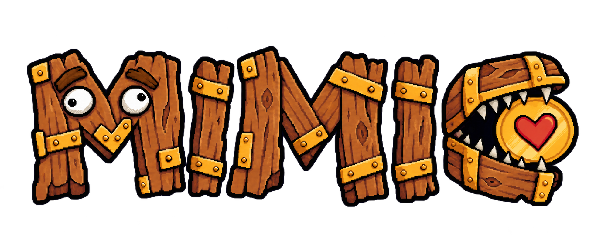

Wordmark V5 · 尖牙與金幣露出
以 V4 為基準，只調整 C 的牙齒：改為較尖、較窄且不規則的三角獠牙；接觸牙只咬住金幣外緣，愛心完全露出，金幣正面盡量不被遮擋。
Review-only：未取代 calibration，未加入 manifest、runtime 或產品頁。

以 V4 為基準，只調整 C 的牙齒：改為較尖、較窄且不規則的三角獠牙；接觸牙只咬住金幣外緣，愛心完全露出，金幣正面盡量不被遮擋。
Review-only：未取代 calibration，未加入 manifest、runtime 或產品頁。
